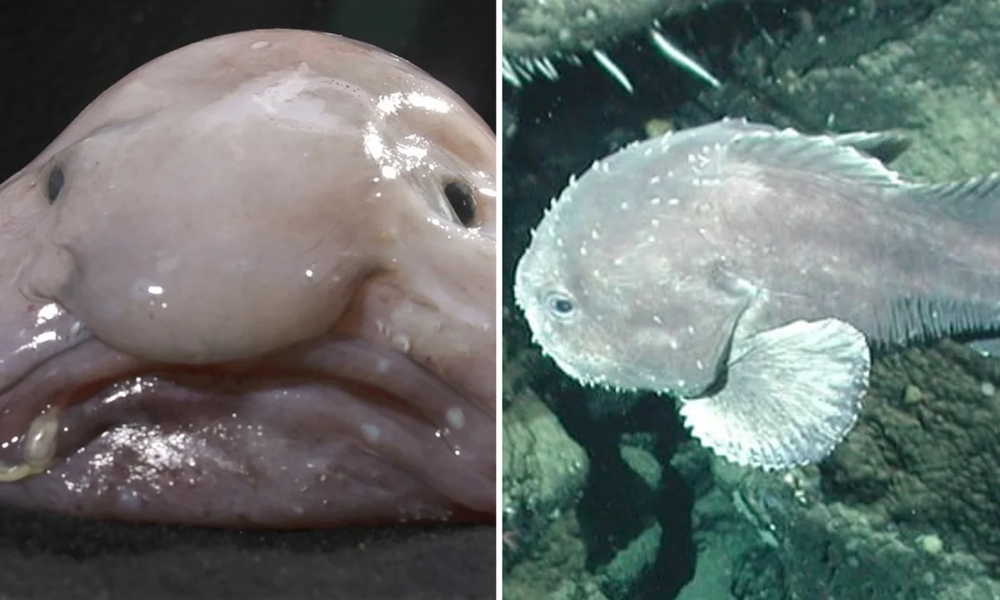
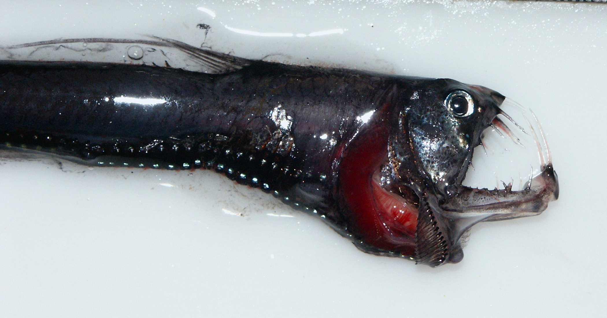
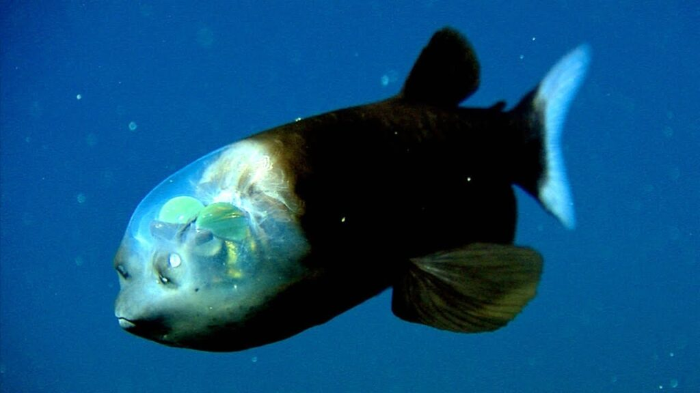
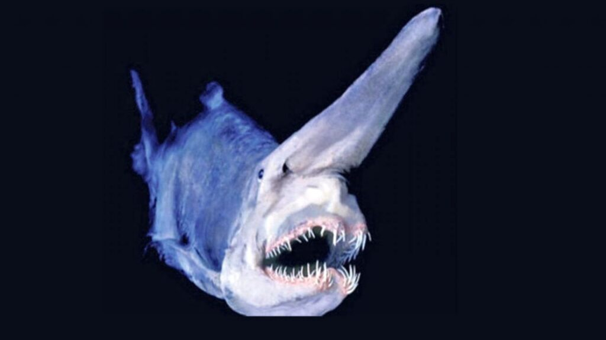
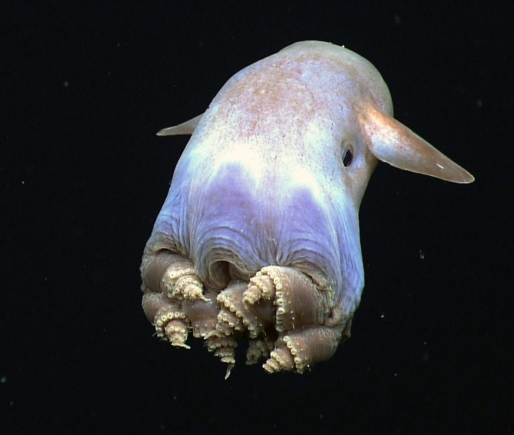
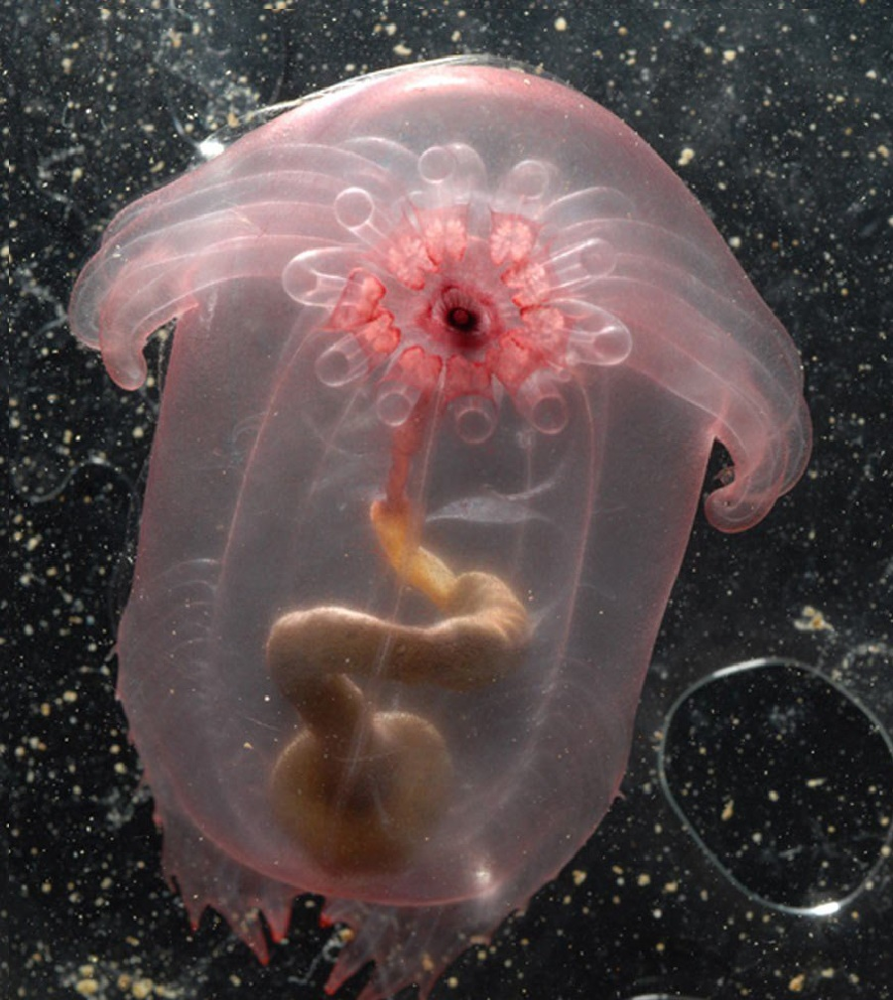

Živali v globokem morju
Živali v globokem morju
Blob fish

If you were asked to think of the ugliest creature you can imagine, you might picture the blobfish: a pale pink gelatinous blob with a droopy, downturned mouth and large, sagging nose. After being named the world’s ugliest animal in 2013.
Viperfish

A viperfish is any species of the genus Chauliodus, marine fish inhabiting the twilight or mesopelagic zone. Viperfish are at most around 30 cm (12 in), and are characterized by silvery scales, long needle-like teeth and photophores along the ventral side of their body (though other fish of the family Stomiidae often have the latter two traits).
Zmajeva riba

Zmajeva riba (Stomias boa) ima sploščeno in podaljšano telo, dolgo približno 30 do 40 centimetrov. Njena usta ogromnih dimenzij imajo dolge in ostre zobe, tako da nekateri osebki ne morejo popolnoma zapreti ust.

Ta vrsta rib je zelo teritorialna in jo redno najdemo skrite v predmetih na dnu oceana. Ko je napadeno njihovo ozemlje, odprejo svoja ogromna usta, da prestrašijo svoje sovražnike
Cvetlični klobuk Meduze

Te meduze se hranijo z majhnimi ribami in lahko rastejo ali skrčijo, odvisno od razpoložljivosti hrane v njihovem okolju.
Dumbo hobotnica

Pod imenom "Dumbo hobotnica" se običajno imenujejo živali oceanskih globin, ki so del rodu Grimpoteuthis, ki je del reda hobotnic. To ime je dobilo po eni od fizičnih lastnosti teh bitij, ki imajo na glavi dve plavuti, tako kot Disneyjev slavni leteči slon.Vendar pa so ob tej priložnosti plavuti v pomoč hobotnici Dumbo, da se sama poganja in plava. To bitje živi med 2.000 in 5.000 metrov globoko, njegova prehrana pa sestavljajo črvi, raki, polži, kopepodi in školjke, kar je mogoče zahvaljujoč pogonu, ki ga ustvarjajo njegovi sifoni.